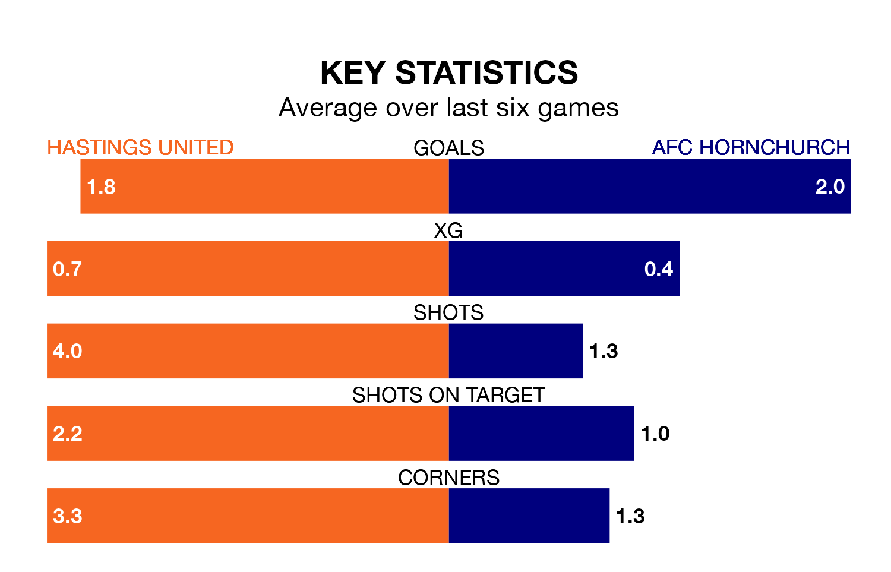

AFC Hornchurch are strong favourites to take all three points despite Hastings United's home advantage in Saturday's match at the Pilot Field.
*Betting Company* are offering odds of 1.83 on Hornchurch sealing the win, with the visitors sitting first in the Isthmian Premier Division table.
Hastings, who are seventh in the league and 22 points behind Hornchurch, are priced at 3.62 to win. A draw is set at 3.65.
With 71 goals in 29 games so far this season, Hornchurch are the league's highest scorers with 2.4 goals per game. And they are conceding fewer than average, letting in 23 goals at a rate of 0.8 per game.
Hastings are also above average scorers, with 1.8 goals per game, compared to a league average of 1.6. They have conceded 1.4 goals per game.
United are in mixed form in the Isthmian Premier Division, with three wins and three losses from their last six games.
With five wins and a draw over that period, the away team's form is much better – they have taken 16 points from 18, compared to the hosts' nine.
In the last three years, Hastings and Hornchurch have played each other on three occasions. Hornchurch won all of them.
Their last meeting was on October 10, when Hornchurch won 4-1 at home.
Hastings's last match was on February 10, a 3-1 loss against Lewes.
Hornchurch beat Haringey Borough 3-0 last time out, on February 17.
Updated: 10:08 (UTC), 23/02/24